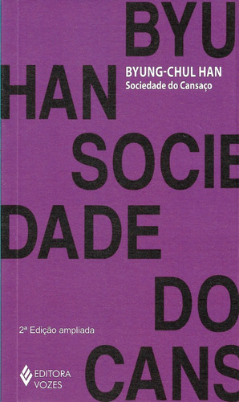

Resenha do Livro: Sociedade do Cansaço, de Byung-Chul Han
Opinião compartilhada por Tatiane Holanda
Sim, estamos todos exaustos! E esse ensaio de Byung-Chul Han explica como nos tornamos a Sociedade do Cansaço.
Como nos tornamos a Sociedade do Cansaço? Nesse ensaio, Byung-Chul Han consegue traduzir os dilemas do nosso tempo, pondo luz em fatos negativos, mas que por muitos são vistos com bons olhos: ser bom em tudo, sempre dar conta, tendo vida social e sucesso profissional.
Destacando nossa aversão ao descanso e o uso excessivo de medicamentos para nos mantermos ativos, produtivos e felizes. Numa realidade em que todos estão cansados, estar cansado também nos causa uma sensação de pertencimento.
Lançado em 2015, na Alemanha, o livro chegou ao Brasil em 2017, pela Editora Vozes. E em 2020, “Sociedade do Cansaço” já estava em sua 9ª reimpressão. Para quem está tendo contato com a obra pela primeira vez somente agora, esse trecho da primeira página pode chamar atenção: "Apesar do medo imenso que temos hoje de uma pandemia gripal, não vivemos numa época viral".
O fato é que, apesar de sabermos da possibilidade de uma pandemia, era impossível prever quando e onde ela começaria, logo Byung-Chul Han jamais imaginaria que seu livro faria tanto sucesso justamente em um período pandêmico. Ironias da vida. O autor, entretanto, faz essa afirmação para introduzir o tema principal de seu livro: para ele o século XXI não é um período de doenças virais ou bacteriológicas, mas sim de doenças neuronais.
Depressão, burnout, TDAH, ansiedade entre tantas outras, são as enfermidades da vez. Na lógica proposta pelo autor, em épocas de doenças virais ou bacteriológicas vivíamos um período imunológico, onde o objetivo era rejeitar todo o corpo estranho que entrasse em nosso organismo. Ou seja, negativávamos esse corpo e isso era importante.
Porém, atualmente, ao trocarmos a alteridade: que seria capaz de causar a reação imunológica, pela diferença: que não acarreta nenhuma resposta imunológica, estaríamos, na verdade, aceitando e acumulando mais do mesmo.
Os discursos com excesso de positividade estariam nos adoecendo, dado que não desenvolvemos mais nosso sistema imunológico contra o organismo estranho, como aqueles momentos negativos que fazem parte da vida. Portanto, o excesso de positividade e de aceitação do igual que nos adoece.
Esse comportamento resulta da evolução da sociedade disciplinar, para a sociedade do desempenho, na qual, pensadores como Foucault afirmam que a sociedade disciplinar estava cercada de presídio, fábricas, asilos, hospitais, tinham poderes e direitos limitados, por leis ou mandamentos; mas hoje, segundo Byung-Chul Han a sociedade está imersa em escritórios, academias, shoppings, num ambiente mais permissivo com muita iniciativa e motivação para sempre desempenharmos algum papel. Seríamos nós, então, os sujeitos de desempenho e produção os famosos empresários de si mesmos.
Algo que conversa muito bem com o fenômeno conhecido como a uberização do trabalho ou a plataformização do trabalho, onde milhares de pessoas trabalham horas a fio, sem nenhum direito ou garantia, para conseguir manter um padrão de ganhos. E sob a ilusão de serem donos do seu tempo, com mais flexibilidade e autonomia.
"A perda moderna da fé, que não diz respeito apenas a Deus e ao além, mas à própria realidade, torna a vida humana radicalmente transitória."São tantos os anseios, os estímulos, as comparações e para a vida dar certo no meio desse caos, não basta pensar positivo. Pelo contrário, reconhecer as falhas do sistema, conhecer nossas fraquezas e erros é o que nos faz humanos e pensar sobre isso pode nos tirar do fluxo.
Seguir produzindo e consumindo até a exaustão, sem oportunizar o tédio e a contemplação, não só desperdiça um direito de poucos, como também mantém a máquina da exploração funcionando em plenas condições. Trabalhar enquanto eles dormem, só vai nos deixar mais cansados e pertencentes a esse sistema.
Vale muito a leitura e a reflexão!